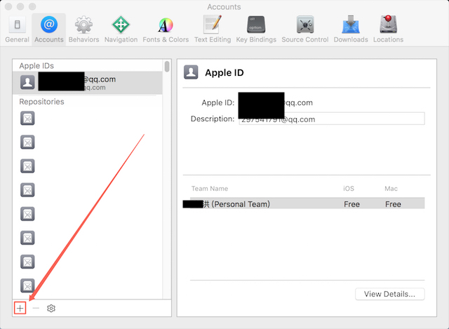
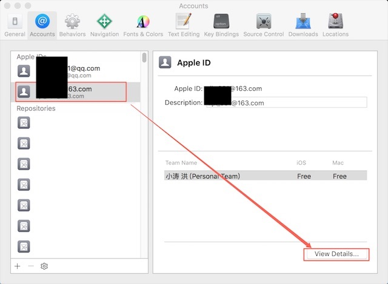
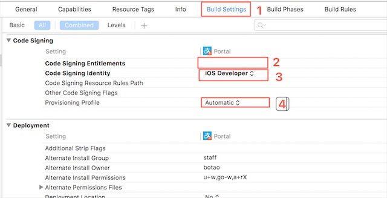
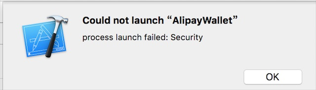
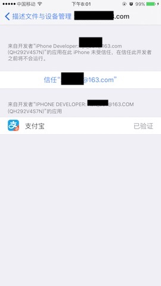

Xcode非开发者账号真机调试教程
对于Xcode7或更高版本，Xcode支持非开发者账号真机调试教程
RT。正文开始。
1、
首先得有Apple ID、Xcode7或更高版本
2、
打开Xcode个人偏好，添加Apple ID

3、
选中添加的账号，打开View Details

4、
创建调试签名，对iOS Development点击Create，至此Xcode配置完成
5、
连接iPhone设备，打开一个工程
6、
查看Build Settings，
确保code signing Entitlements为空，
Code signing Identity选择iOS Developer，
Provisioning Profile选择Automatic

7、
调试设备选择插入的iPhone，
查看General，
修改下Bundle Identifier的内容，例如加个后缀，确保改值未被其他账户使用过，
Team选择刚添加的账号，
然后开始Fix issue（如果没有黄色警告，可以直接run）
8、
fix的过程比较久，如果超时了，重试fix。
成功后，黄色警告消失。此时可以run了
9、
iOS9 或更高版本，第一次run可能会报错，
此时可以看到iPhone里已有demo，证书信任下


10、
Congratulations!Final Complete！Mission All~Over!
11、
针对xcode 8.2级以上版本，有时遇到如下报错1
The 'Apple Push Notification' feature is only available to users enrolled in Apple Developer Program. Please visit https://developer.apple.com/programs/ to enroll.
老版本可以在Capabilities直接关掉Push，8.2开始，界面上没有这个开关了，但配置还在。此时需要手工编辑xproject。
打开工程目录下：/Pods/Portal/Portal/Portal.xcodeproj，右键“显示包内容”，打开project.pbxproj，搜索关键词“com.apple.Push”，看见如下内容：1
2
3com.apple.Push = {
enabled = 1;
};
修改enabled = 0，保存，退出，run～